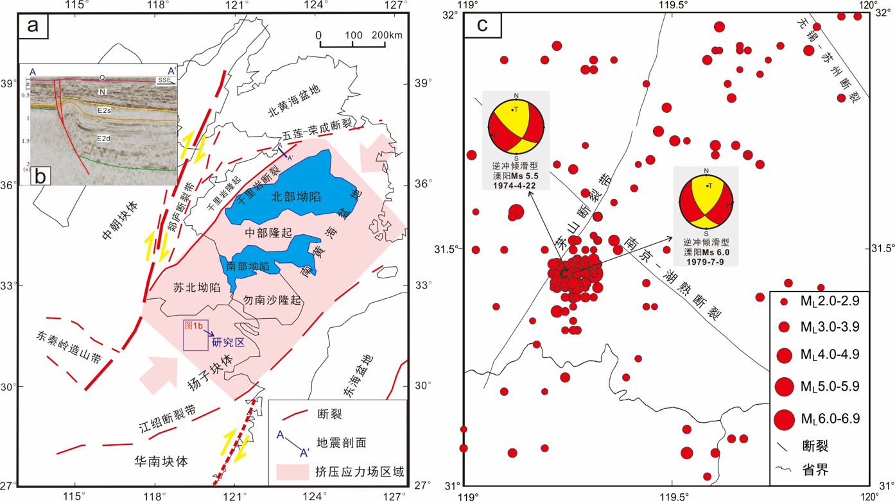
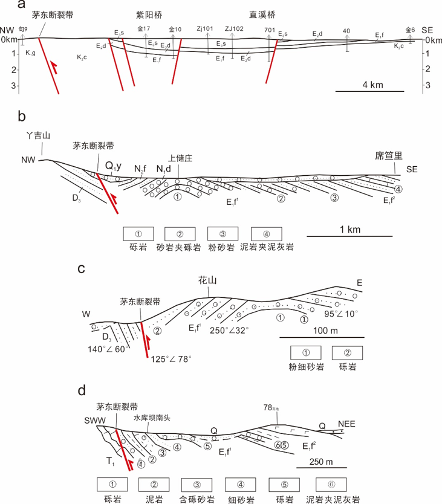
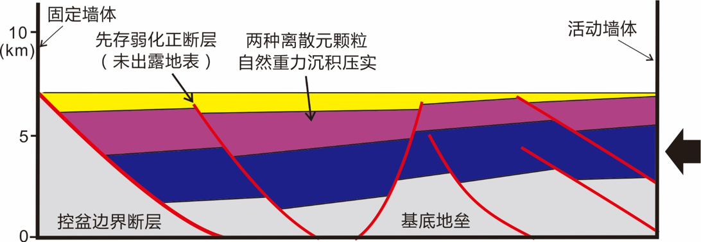
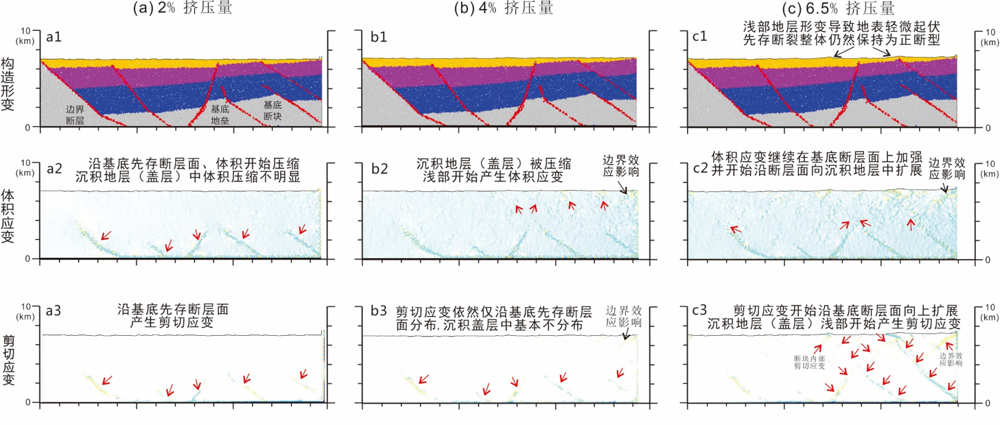
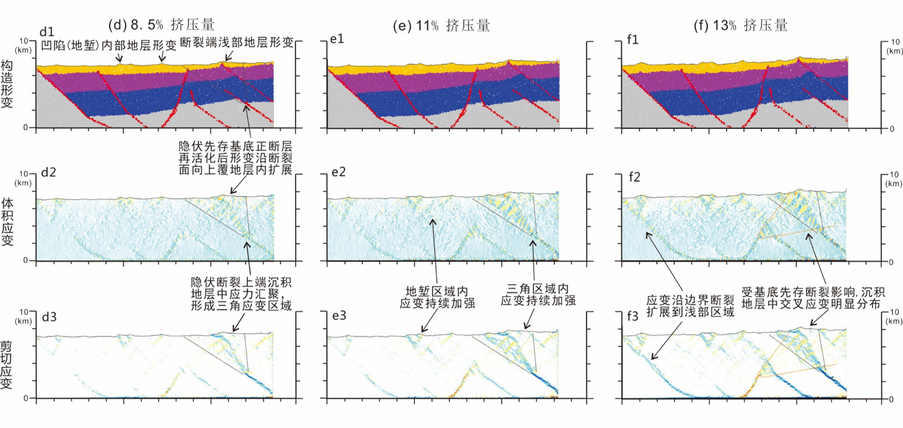
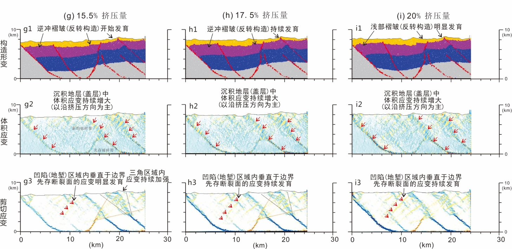

第27专题：区域地震构造及其地震危险性与地震地质灾害
地 点：北京 北京国际会议中心 第10会议室(三楼301)
时 间：2019年10月28日 14:55-15:10
题 目：我国东部茅东断裂带反转构造特征及控震机制探讨：来自离散元数值模拟的启示
报告人：吴珍云 ，尹宏伟，李长圣 东华理工大学 南京大学
摘 要：通过分析茅东断裂带地质构造和历史地震特征，结合离散元模拟实验，分析了挤压应力下断陷盆地构造反转及断裂活动特征，探讨了茅东断裂带作为断陷盆地在现今区域应力场作用下反转构造特性及正断层反转控震机制。结果表明：（1）挤压应力下，断陷盆地发生构造反转，促使盆地中先存正断层再活化以及浅部地层褶皱变形，但盆地中先存断层总体仍保持正断形态；（2）构造反转过程中，应力应变汇聚易优先发生在基底断层面上，并逐渐向沉积地层中传播，最终在浅表触发构造形变；（3）茅东断裂带属于活动断裂群，以茅东断裂等控盆边界断裂（基底断裂）活动为主，沿着该类断裂，应力应变汇聚明显，具备中、大地震的发震构造条件；断陷内其他隐伏的次级先存断裂也存在活动可能性，且断块间地层在压扭应力场下存在应力应变汇聚，同样具备浅源小震的发震构造条件。 关键词：断陷盆地；离散元模拟；茅东断裂带；构造反转；断裂活动性
我国东部受来自太平洋板块向西部欧亚大陆下俯冲和菲律宾板块向北西朝欧亚大陆下俯冲的联合作用的影响，现代构造应力场的主体特征表现为北东东-南西西向的挤压（图1a）。而受郯庐断裂带右旋走滑和东南沿海断裂带右旋走滑等新构造运动的影响，东部下扬子地块基本处于两者之间的压扭转换带区域（图1a），下扬子地块区域内现代构造应力场具有明显压扭特性，导致区域内断陷盆地中正反转构造发育（图1b）。

图1 研究区区域位置图及历史地震分布图
茅东断陷盆地
在断陷盆地内部（如直溪桥凹陷），分布有高角度倾角断裂，这些断裂整体具有正断层构造样式（图2a）。在凹陷西侧，断裂倾向SE（SEE）；凹陷东侧，断裂倾向NW（NWW）（图2a）。前人沿茅东断裂走向开展了较为详细的路线勘探工作，获得了具有代表性的茅东断陷盆地地表地质剖面（图2b至图2d）。这些地质剖面均表明沿茅东断裂，地层发生了不同程度的褶皱构造变形。此外，沿着茅东断裂，断陷盆地中部分第四纪沉积地层已遭受到了断裂的破坏（图2b）或者发生同构造变形（图2d），这些也表明了茅东断裂逆冲活动时间已经延续到了第四纪。

图2 茅东断陷盆地勘探剖面图
模型设计
本文离散元模拟实验初始模型见图5。模型中代表岩石颗粒的基本粒子有两种，其半径分别设置为40 m和60 m。所有粒子被随机地分布在封闭的方形箱子里，并允许它们在重力作用下沉积压实。在实验设计中，定义了盆地中的先存正断层（弱化断层），并允许断层上下盘能够自由的变形，以便观察挤压反转过程中，反转断层上下盘的变形样式。为了便于观察，粒子被不同颜色标记，其中红色代表先存正断层，灰色代表基底地层，蓝色、紫色和黄色代表沉积地层。模型左边界和底边界固定，右边界向左推移以产生挤压效应。 本实验中实验模型参数设置参照了前人设计，其中基底岩石层的颗粒密度为2500 kg·m-3，盖层岩石层的颗粒密度为2200 kg·m-3。同时，设定各地层的摩擦系数为0.3，并且颗粒之间具有粘结作用力，先存弱化断层之间的摩擦系数为0，并且与任何颗粒之间均无粘结作用力。模型中所有颗粒的泊松比设定为0.2。

图3 断陷盆地构造反转的离散元数值模拟实验模型设计图
实验初始阶段，模型没有发生明显的构造形变（图4a1），但是通过模型应变分析分别可以看到模型中产生了体积应变和剪切应变，且主要沿先存基底断裂面分布，说明这个阶段挤压应力主要在先存基底断裂面上汇聚，而在沉积地层（盖层）中应力汇聚较小，以致基本无应变分布（图4a2至图4a3）。当挤压应力持续作用时（如挤压量达4%时），模型内部构造形变和应变分布依然在基底断裂面上，沉积地层（盖层）中只是开始在浅部地层中产生轻微体积应变（图4b）。直到挤压量达到6.5%时，模型内基底先存断裂开始反转活化并产生位移（断裂整体保持为正断型），应变开始由基底断裂面向沉积盖层中逐渐扩展，模型内地表地形发生轻微起伏（图4c），表明应力作用已传播到达地表，并引起地表轻微形变。
实验结果
当挤压量持续增大时（8.5%-13%），模型内部凹陷程度开始增大，基底先存断裂反转位移量增加不明显，整体构造形态也几乎无明显变化（图4d至图4e）。在靠近挤压端一侧，隐伏先存基底断裂上端沉积地层（盖层）中，形成了一个三角应变区域（图4d2至图4d3），该区域内体积应变和剪切应变随挤压量增大逐渐增大，表明沿着基底先存断裂挤压应力在此区域内逐渐汇聚。此外，沿着左侧基底边界大断裂，应变也逐渐向浅部地层中扩展，断层反转位移量也开始逐渐增大。 当挤压量持续增大到15.5%后，沿左侧基底边界大断裂，断层产生明显的位移，并开始发育反转断层相关褶皱（图4g1至图4i1）。在基底地垒断陷盆地内的先存断裂则由于挤压应力作用导致发生了一定程度的旋转、扭曲。在这个阶段，各基底先存断裂与沉积地层中的先存断裂一致活动，导致沉积地层（盖层）中体积应变和剪切应变仍然在持续增大。当模型挤压量达到20%后，在基底边界大断层上方沉积地层中则产生明显的拖曳褶皱构造形变，同时断陷内部盖层则总体呈褶皱样式，形成“上褶下断”和“上凸下凹”的构造形态。
  图4 基于离散元实验模拟的断陷盆地构造正反转演化图
研究结果对茅东断陷带的启示
- 茅东断陷盆地具有正反转构造特征
- 正断层反转控制了该区域地震发生
致 谢 本文数值模拟实验是据美国Rice大学Julia Morgan 教授提供的RICEBAL离散元计算程序及后续应力应变分析代码开展。两位匿名审稿专家在论文评审中提供了具有建设性的修改意见。在此一并表示感谢
采用VBOX同样可以完成上述实验
参考文献
- 吴珍云,尹宏伟,李长圣,等. 断陷盆地正反转构造实验模拟及对茅东断裂带的启示.南京大学学报（自然科学）,2019,5(55):869-878.